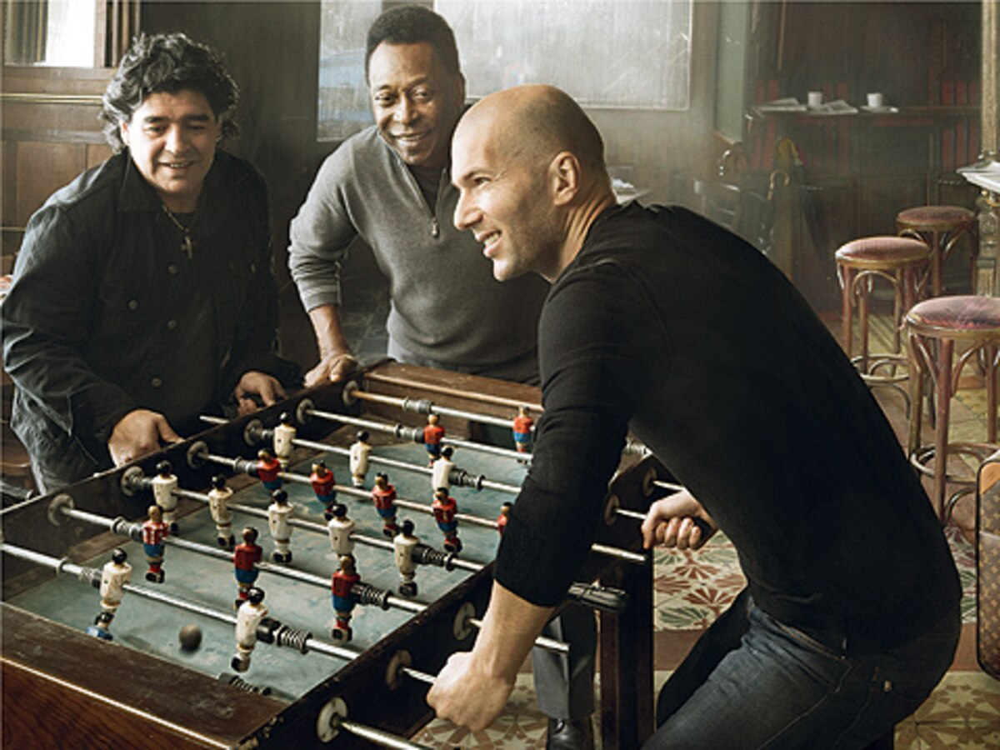
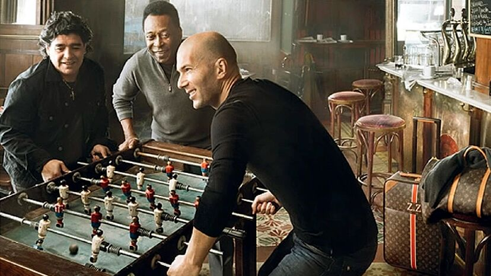

案例发生了什么


让贝利、马拉多纳和齐达内三位 10 号在马德里小酒馆围着桌上足球较量，用一张安妮·莱博维茨照片把三段人生旅程压缩为“一场历史比赛”。
国际平面大片先制造全球同框；专属网站发布三人访谈和桌上足球结果；同期世界杯奖杯硬箱强化品牌与赛事的真实关系。
MARKETING KNOWLEDGE ROUTER · 营销知识路由器
营销启发卡
把历届经典的记忆点、商业结构和迁移方法放在同一层阅读。 卡片底部按主题连接全站相关案例、经典方法与深度文章。
核心动作
跨时代对话、传奇人物的稀缺同框、老友般的轻松与谁更伟大的争论；贝利、马拉多纳、齐达内围在一张桌上足球台前。
传播与商业机制
Louis Vuitton 的核心是“旅程”；三位球王代表三条跨时代旅程，旅行箱自然出现在他们相遇的场景里，而不是硬塞产品；国际平面大片先制造全球同框；专属网站发布三人访谈和桌上足球结果；同期世界杯奖杯硬箱强化品牌与赛事的真实关系。
可复用的方法
静态平面同样可以成为全球事件：关键是人物关系足够稀缺、场景足够简单、产品能解释这次相遇。
适用条件、风险与证据
- 传奇阵容和顶级摄影不可复制；若人物与品牌母题没有真实连接，容易只剩昂贵合影。
- 后续复盘还应补齐发布主体、时间线、真实执行图、媒介范围和结果口径；没有这些证据时，不把行业评价或赛事总热度写成品牌增量。
资料与来源
官方资料与原始来源
市场 / 权益
全球
非官方借势 / 世界杯奖杯箱合作背景
创意打法
传奇同框型；品牌母题型；静态影像型
- British Vogue · 2010-04-22Pelé, Maradona and Zidane for Louis Vuitton
- Campaign · 2010-04-30Louis Vuitton launches campaign with Pelé, Maradona and Zidane
- Infobae · 2010-04-22本页真实案例图片主源
- Marca本页真实案例图片主源
来源按品牌/官方发布、官方账号留存、权威媒体、获奖案例库分层记录；品牌与奖项自报结果不视作独立审计。